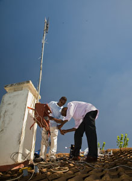
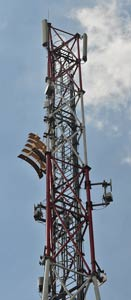

FabFi is an open-source, FabLab-grown system using common building materials and off-the-shelf electronics to transmit wireless ethernet signals across distances of up to several miles. With Fabfi, communities can build their own wireless networks to gain high-speed internet connectivity---thus enabling them to access online educational, medical, and other resources.(Source: fabfi.fablab.af)
Most people in the developing world such as Kenya find it very expensive to connect to the Internet due to low income rates. FabFi tackles this issue by using cheap and readily available materials i.e. appropriate technology to build a system that transmits ethernet signals at long ranges. With FabFi, wireless networks can be created among communities so that they can enjoy cheap and fast wireless Internet connection. As a result, from the law of demand, more and more people will connect to the Internet due its relative cheapness.This in turn, enables people to access tons of meaningful information which can help them improve their lives and make correct decisions. In conclusion, because of its affordability and quality, FabFi has been effective in bridging the divide.